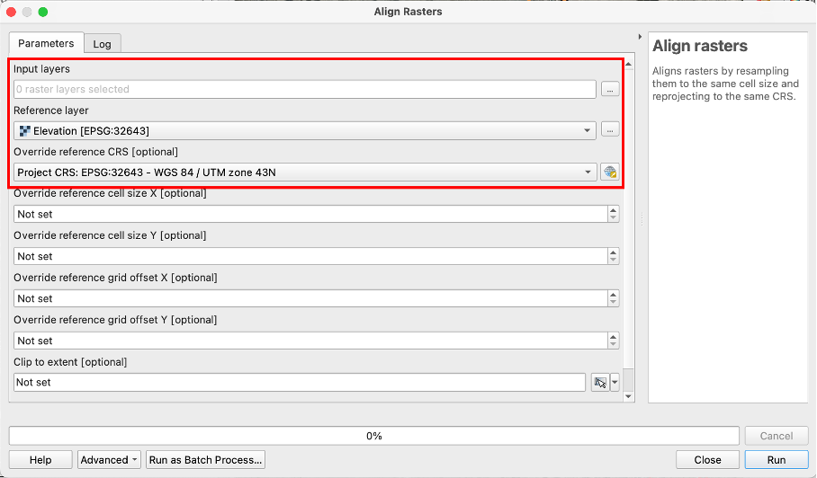
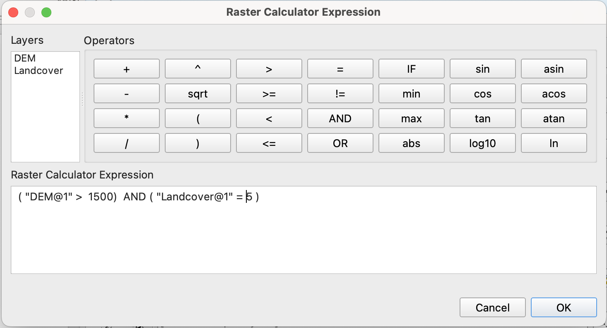
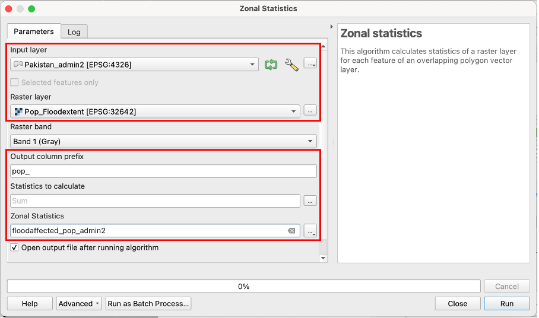

Common Raster Operations#
In this chapter, we will go over a few common raster operations used in GIS. We will cover the basics, such as reprojecting raster layers and removing NoData cells and go on to more advanced processing such as clipping rasters, working with several raster layers, calculating statistics based on raster values, and vectorising raster layers.
Note
Parts of the content of this page has been inspired by the GIS4Schools Webbook by GEOLab.
Investigating the Layer properties#
The first thing you should do when working with geodata is to familiarise yourself with the dataset. You can do that by investigating the layer in the map canvas, using the identify tool to see the values of a few of the raster cells. You should also look at their properties to find out the Coordinate Reference System (CRS) and the cell size. When working with multiple raster layers, in most cases, it is important that the raster cells overlap exactly. Therefore, the CRS of the raster layers will have to be the same as well as the cell size and the raster extent. You might be unable to compare or combine raster layers correctly if they do not share a common CRS or the raster cells are not aligned. This might lead to unwanted interpolation or the processing operation not succeeding.
To check the CRS and cell size, Right-click on the raster layer and select Properties → Information.
Reprojecting Raster Layers#
Reprojecting a raster layers works in a similar way as reprojecting vector layers.
In the top bar, navigate to
Raster→Projections→Warp (Reproject). The Warp (Reproject)-Tool will open.Here, you can select the input layer, the source CRS, the Target CRS and the resampling method. The resampling method determines how the algorithm determines the value of a cell, if it’s location shifts during the reprojection. Except when you are working with continuous data such as temperature or rainfall, you can leave the resampling method on
nearest neighbor.Once you have set the parameters, click on
Run. A new layer will be added to your QGIS project. If it is a temporary layer, it will be called “Reprojected” and you should rename it to better identify the layer.
Aligning Rasters#
When working with multiple rasters, it is important that the raster cells are aligned. Otherwise, you might get wrong results. With the “Align rasters” tool, raster datasets with different spatial resolutions, grid orientation or Coordinate Reference systems can be aligned. This is particularly useful when preprocessing raster layer for conducting precise spatial analysis, such as overlay operations, statistical analysis, raster calculator operations in general.
Example: We have a elevation and precipitation rasters with different spatial resolution and want to align the rasters for the analysis of precipitation sums in high altitude areas: 1. Click on the three dots next to the “Input layers” prompt and choose the rasters you want to align by checking the boxes next to them. 2. Choose the raster you want to use as blueprint for the alignment. In this cas we want to align both rasters to the parameters of the “Elevation” raster. 3. If you want to reproject the aligned rasters to a new CRS different from the Reference layers you can choose it under “Override reference CRS”.
{kind=link}

Interface of the “Align Rasters” tool#
Note
There are further optional operations that allow you to set a specific cell size (in x and y direction) and grid offset different from the reference raster or clip the output to a defined extent. This can be handy for very specific use cases, but is not necessary in the majority of applications.
Clipping Raster layers#
Performing calculations using raster layers can quickly become very CPU-intensive and take an exponential amount of time. There are two ways of reducing the number of cells in a raster layer:
Reduce the raster resolution
This is equivalent to making the cells bigger in size: You can convert four 100 m² cells into 1 200 m² cell. However, you have to consider the type of data stored in the cells. For example, for raster layer containing information on the population living in a 100 meter grid, you will have to add the four cell values to obtain the new value for the 200 m² cell. But if the data contained in the cell holds temperature data, you might want to interpolate or select the median of the four values as the new value.
Clip the Raster to remove cell values that are not needed.
For example, we want to find out how much precipitation in mm fell in the last month in Cambodia. However, our raster extent spans over a larger area than Cambodia. We can remove the cells we are uninterested in by clipping the raster extent to a mask layer.
To clip a raster layer:
In the processing toolbox, search for “Clip Raster” and select
Clip Raster by Mask Layer.A new window will open. Here you can select the vector layer containing the polygons which will be used as zones.
Raster Calculator#
The raster calculator let’s you perform mathematical operations with the raster values using one or multiple raster layers. Similar to the field calculator for vector data, you can enter expressions. These expressions can include arithmetic operations such as multiplication, comparison operators such as <. >, =, conditional expressions like “IF” “THEN” statements, and statistical functions such as “mean” or “sum”.
Example: You have a Digital Elevation Model with the Altitude in m and a land cover classification raster. You want to produce a raster with all agricultural areas (raster value = 5) above 1500m.
{kind=link}

Interface of the “Raster calculator” tool#
In the raster calculator,
click on the elevation raster layer to add it to the expression builder.
Enter the comparison operator
>and enter 1500. This will select the raster cells representing an altitude higher than 1500 meters.Put the expression into parentheses. The first part of the expression should be as follows
( "DEM@1" > 1500)
Enter the second part of the Expression:
AND ( "Landcover@1" = 5)
This selects all the raster cells where the cell value equals 5.
The full expression should be:
( "DEM@1" > 1500) AND ( "Landcover@1" = 5 )
Click
OKThe result will be a new raster where the cells that fulfill the condition of our expression will have the value
1, while all other pixels have the value0.
Zonal Statistics#
The Zonal Statistics tool calculates statistics (like mean, median, sum, etc.) for each zone. A zone can be a polygon of a vector layer or another raster layer. This is particularly useful for analyzing raster data within defined geographic zones, such as administrative boundaries or land use classes. For example, with a population raster dataset, we can calculate the population sum per district using a vector layer with administrative boundaries. Or, we could calculate the mean temperature of a country.
In the example below, we will calculate the population count affected by recent floods in Pakistan.
We have the following datasets:
administrative boundaries (adm2) for Pakistan:
Pakistan_admin2.
Example: We have a raster layer with population count affected by a recent flood in Pakistan and a polygon layer with administrative districts. We want to calculate the number of flood affected people per district.
As “Input Layer” choose your polygon layer with district extents. “Pakistan_admin2” in this case.
As “Raster Layer” choose the layer with the cell values you want to base your statistics on. “Pop_floodextent” in this case.
Defining a prefix for your output column is optional but can be helpful for finding the calculated values in large attribute tables. For population counts you can for example choose “pop_” as “Output column prefix”.
Below “Statistics to calculate” click on the
 icon to access the different options of statistical operations available for calculating polygon values based on your raster. In this case “sum” would be the operation of choice as we want the total sum of flood affected people per district.
icon to access the different options of statistical operations available for calculating polygon values based on your raster. In this case “sum” would be the operation of choice as we want the total sum of flood affected people per district.
Solution
“Sum” is the appropriate method, as we want the total population count per district that results from the additions of the values of all cells with affected population per district.
Name your layer “Floodaffected_pop_admin2”, save it to your “output” folder and click
Run.
{kind=link}

Interface of the “Zonal statistics” tool#